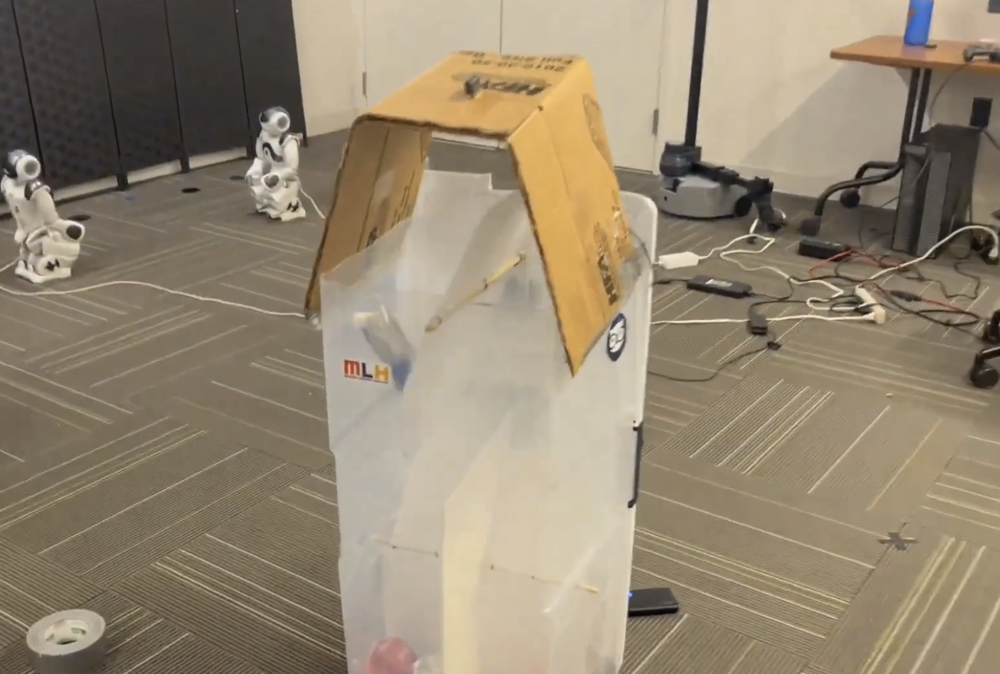
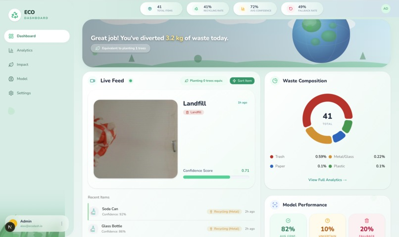

Most household recyclables end up in the landfill because of improper disposal. This trachcan automatically sorts waste using computer vision. Made out of scraps for Hoo Hacks 2026.

Trash Detective is a smart trash sorting system with a real-time analytics dashboard. You drop an item into the sorter, a camera captures it, a computer vision model classifies it into one of four categories (paper/cardboard, metal/glass, plastic, or trash), and a servos routes it to the correct bin. Every sorted item shows up on a live dashboard with the captured image, classification, confidence score, and environmental impact metrics.

We used a Raspberry Pi, a standard webcame and cheap servo motors inside a custom-built sorting enclosure. The sorting enclosure was made from a plastic storage bin, carboard and zipties. For classification, we run OpenAI's CLIP model on a PC server with tuned text prompts for each waste category, so we didn't need any custom training data.